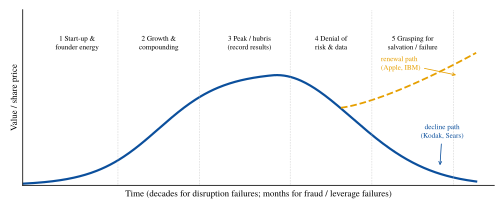
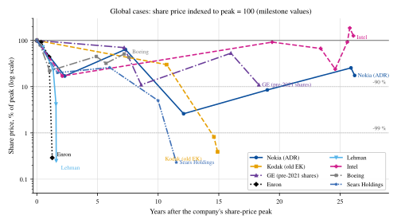
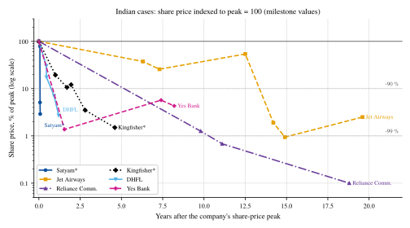
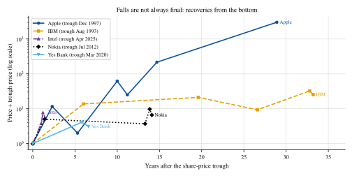
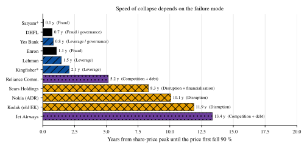
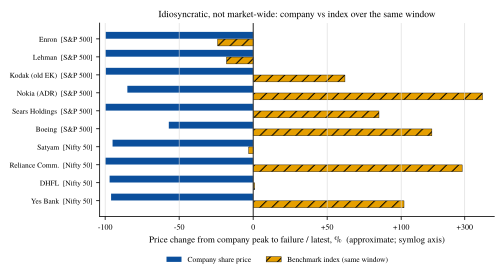
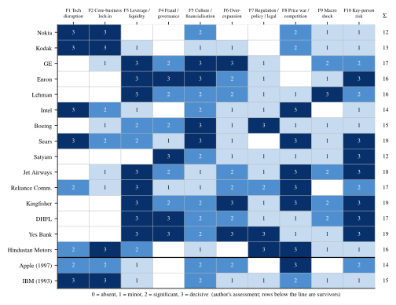

Abstract
No company compounds profit forever. This paper studies seventeen companies from eleven industries and two markets: fifteen that rose to dominance and then collapsed or shrank sharply, and two that came back from near-failure. The fifteen are Nokia, Kodak, General Electric, Enron, Lehman Brothers, Intel, Boeing, Sears, Satyam Computer Services, Jet Airways, Reliance Communications, Kingfisher Airlines, DHFL, Yes Bank and Hindustan Motors; the two contrast cases are Apple and IBM. For each company the rise, the peak, the warning signs and the fall are traced, and the share price is lined up on a common base (peak = 100, time measured in years after the peak) using verified milestone prices. Ten causes of decline are defined and scored for every case. Three findings stand out. First, the type of failure sets the speed of the fall: in the cases studied, fraud- and leverage-driven collapses took a median of about one year to lose 90 % of peak value, while technology-disruption and competition declines took a median of about ten years. Second, the falls were company-specific, not market-wide: in eight of ten comparisons the benchmark index rose over the same window in which the company lost 57–99.9 %. Third, strategy mistakes are survivable when the balance sheet is strong and the accounts are honest; companies that combined high leverage with weak governance were the ones whose shareholders were wiped out. The paper closes with an engineering view of corporate failure (fatigue versus brittle fracture), an early-warning checklist and lessons for managers and investors.
Keywords: corporate decline, creative destruction, disruptive innovation, corporate governance, financial leverage, stock-price drawdown, early-warning indicators, case study, India, United States.
1. Introduction
Every list of “great companies” becomes a list of warnings within a generation. General Electric was the most valuable company on earth in 2000 [16]; Nokia sold four of every ten mobile phones in 2007; Kodak once owned the image itself. Each later lost most or all of its market value. In India the story repeats on a shorter clock: Satyam, Jet Airways, Reliance Communications, Kingfisher Airlines, DHFL and Yes Bank were all market darlings that fell more than 90 % from their highs, several in less than two years.
The economist Joseph Schumpeter called this process creative destruction: new combinations of technology and business model displace the old ones, and the displacement is the engine of growth for the economy as a whole [3]. For an individual company, however, the same process looks like a life cycle with a peak and a decline [5]. Studies of long-lived index members show that the average tenure of a company in a major stock index has shortened markedly over the twentieth century [6]. The question for a manager, an engineer or an investor is not whether decline can happen, but how it happens, how fast, and what it looks like in advance.
This paper answers those questions with seventeen case studies chosen to span domains (consumer electronics, imaging, industrial conglomerates, energy trading, investment banking, semiconductors, aerospace, retail, IT services, aviation, telecom, housing finance, banking and automobiles), two markets (the United States/Europe and India) and the full range of failure speeds. The contribution is threefold:
- a taxonomy of ten decline factors, scored consistently across all cases (Section 4 and Figure 5);
- a common-base comparison of share-price paths that makes very different companies directly comparable (Figures 2–3), together with a comparison against the benchmark index over the same window (Figure 7);
- a practical early-warning checklist, framed with the failure-mode vocabulary familiar to engineers (Section 9).
2. Background: Theories of Corporate Rise and Decline
2.1 The Life-Cycle View
Adizes describes organisations as passing through courtship, infancy, growth, prime, stability, aristocracy, bureaucracy and death [5]. The useful idea is that the qualities which create success—focus, speed, a dominant product—slowly turn into rigidity. Collins, studying formerly great American firms, proposed five stages of decline: hubris born of success, undisciplined pursuit of more, denial of risk and peril, grasping for salvation, and capitulation to irrelevance or death [2]. Figure 1 maps these stages onto a stylised value curve and shows the two possible exits: renewal or terminal decline.

2.2 Disruptive Innovation
Christensen showed that well-run incumbents often lose to new technologies precisely because they listen to their best customers and protect their margins [1]. A disruptive product is usually worse on the incumbent’s traditional measures, sells to a fringe market at low margin and therefore looks unattractive—until it improves and takes the core market. Kodak and Nokia are textbook examples; Intel’s miss on mobile processors is a more recent one.
2.3 Financial Fragility
Minsky’s financial-instability hypothesis argues that long periods of stability encourage borrowers and lenders to take on more risk, moving from “hedge” finance (cash flows cover interest and principal) to “speculative” and finally “Ponzi” finance (new borrowing is needed just to pay interest) [4]. Lehman Brothers, DHFL, Yes Bank and the debt-funded Indian airlines and telecom firms all show this drift.
2.4 Governance and Agency
When managers or controlling promoters can act in their own interest without effective checks from boards, auditors or regulators, accounting fraud, related-party lending and value extraction follow. Enron in 2001 led to the Sarbanes–Oxley Act in the United States; Satyam in 2009 had a similar effect on Indian corporate-governance norms [34].
3. Method and Data
3.1 Case Selection
Ten primary cases were chosen to cover distinct domains and failure types, then extended with five further Indian cases and two recovery cases. Table 1 lists all seventeen. The selection is purposive, not random: it is designed to contrast failure modes rather than to estimate failure rates, so the results describe mechanisms, not probabilities.
3.2 Price Data and Normalisation
For each listed company the all-time (or pre-crisis) share-price high was taken as the peak and set to 100. Subsequent prices were expressed as a percentage of that peak and plotted against years elapsed since the peak, on a logarithmic scale so that a fall from 100 to 10 and a fall from 10 to 1 look the same size. Two cases use a reference level other than the all-time high, marked with an asterisk: Satyam is indexed to its level on 16 December 2008, the day the failed Maytas deal was announced, and Kingfisher to its November 2010 post-recovery high.
Prices are milestone values collected from exchange data, financial news and company histories [7]–[58]: the peak, major turning points, the trough, and the latest or final quote. Straight lines join the milestones; they are not daily series, and intermediate wiggles are not shown. Prices are adjusted for stock splits where the source does so; dividends are not included. Values marked “~” in the text are approximate. These choices are adequate for the purpose here—comparing the shape and speed of declines—but the figures should not be used for return calculations.
3.3 Factor Scoring
The ten decline factors of Section 4 were scored 0 (absent), 1 (minor), 2 (significant) or 3 (decisive) for each case, based on the documented history. The scores are the author’s structured judgement and are shown in full in Figure 5 so that readers can disagree with specific cells.
Table 1. Summary of the Seventeen Cases
| Company | Domain | Mkt | Peak (date, price) | Low / end | Max fall | Dominant cause | Outcome (Nov 2026) |
|---|---|---|---|---|---|---|---|
| Nokia | Mobile phones → networks | FI/US | Jun 2000, $61.88 (ADR) | $1.63 (Jul 2012) | 97 % | Platform disruption | Survived as network vendor; ~85 % below peak |
| Kodak | Imaging | US | 1997, $94.75 | $0.37 (Jan 2012) | 99.6 % | Digital disruption | Ch. 11 (2012); old equity cancelled |
| General Electric | Conglomerate | US | Aug 2000, ~$60 | ~$6.7 (2009, 2018) | 89 % | Leverage, over-diversification | Split in three; GE Aerospace at records |
| Enron | Energy trading | US | Aug 2000, $90.75 | $0.26 (Nov 2001) | 99.7 % | Accounting fraud | Bankrupt Dec 2001 |
| Lehman Brothers | Investment bank | US | Feb 2007, $86.18 | $0.21 (Sep 2008) | 99.8 % | Leverage, mortgage assets | Bankrupt Sep 2008 |
| Intel | Semiconductors | US | Aug 2000, $74.88 | $18.13 (Apr 2025) | 76 % | Missed mobile; process lag | 2026 rebound above 2000 high, then −32 % |
| Boeing | Aerospace | US | Mar 2019, $440.62 | ~$95 (Mar 2020) | 78 % | Culture, quality, safety | Recovering; ~57 % below peak |
| Sears Holdings | Retail | US | Apr 2007, $195.18 | $0.44 (Oct 2018) | 99.8 % | E-commerce; financial engineering | Bankrupt Oct 2018 |
| Satyam | IT services | IN | Dec 2008 ref., ~₹226* | ₹6.50 NSE (Jan 2009) | 97 % | Accounting fraud | Taken over by Tech Mahindra |
| Jet Airways | Aviation | IN | 2005, ₹1,379 | ₹13 (Mar 2020) | 99 % | Price war + debt | Liquidation ordered Nov 2024 |
| Reliance Comm. | Telecom | IN | Jan 2008, ₹804 | ₹0.81 (Nov 2026) | 99.9 % | Debt + Jio price war | In insolvency since 2019 |
| Kingfisher Airlines | Aviation | IN | Nov 2010, ₹90.4* | ₹1.36 (2015) | 98.5 % | Debt, overexpansion | Grounded Oct 2012 |
| DHFL | Housing finance | IN | Aug 2018, ₹691 | ₹18.45 (Oct 2019) | 97 % | Liquidity, alleged fund diversion | Sold under IBC (Piramal) |
| Yes Bank | Banking | IN | Aug 2018, ₹404 | ₹5.55 (Mar 2020) | 98.6 % | Risky lending, governance | Rescued; SMBC ~25 % owner |
| Hindustan Motors | Automobiles | IN | Ambassador era (pre-1983) | 2,200 cars (FY14) | — | Protected-market inertia | Plant shut 2014; brand sold 2017 |
| Apple | Computers | US | Trough Dec 1997, ~$0.12† | — | — | (near-failure 1997) | ~3,000× from trough |
| IBM | Computing | US | Trough Aug 1993, ~$10† | — | — | (record loss 1993) | Record high Jun 2026 |
* Reference level, not all-time high (see Section 3.2). † Split-adjusted. Max fall is from peak to lowest milestone. Sources: [7]–[58].
4. A Taxonomy of Decline Factors
Reading across all seventeen histories, ten recurring causes can be separated. They rarely act alone; the typical failure combines one strategic cause (F1–F2, F6, F8) with one financial or governance cause (F3–F5) and is triggered by an external shock (F7–F9).
F1 – Technology disruption. A new technology makes the core product obsolete or commoditised (digital imaging, smartphones, e-commerce, mobile processors).
F2 – Core-business lock-in. The company sees the change but protects its existing profit pool (Kodak’s film margins, Nokia’s Symbian, Hindustan Motors’ Ambassador).
F3 – Leverage and liquidity. Debt, short-term funding or off-balance-sheet obligations leave no margin for a bad year (Lehman, DHFL, Jet Airways).
F4 – Fraud and governance failure. Falsified accounts, related-party dealings or a captured board (Enron, Satyam, alleged diversion at DHFL, NPA under-reporting at Yes Bank).
F5 – Culture shift and financialisation. Engineering or customer culture is replaced by short-term financial targets, buybacks or asset stripping (Boeing after 1997, GE Capital, Sears).
F6 – Over-expansion and diversification. Growth for its own sake, often by acquisition (GE, Kingfisher–Air Deccan, Jet–Air Sahara).
F7 – Regulation, policy and legal shock. A regulator or court changes the rules or acts (737 MAX grounding, RBI moratorium on Yes Bank, spectrum and AGR rulings for telecom, the end of India’s licence raj).
F8 – Price war and competition. A rival with lower costs or deeper pockets resets industry prices (IndiGo for Indian full-service carriers, Jio for RCom, Fujifilm for Kodak, Walmart and Amazon for Sears).
F9 – Macro and cyclical shock. Recessions, credit crunches, fuel spikes and pandemics (2008 crisis, the 2018 IL&FS default, COVID-19).
F10 – Key-person and promoter risk. One dominant founder, chairman or CEO whose decisions go unchallenged (Ramalinga Raju, Naresh Goyal, Vijay Mallya, Rana Kapoor, Edward Lampert).
5. Global Case Studies
5.1 Nokia: From Paper Mill to Phone King to Network Vendor
Rise. Founded in 1865 as a Finnish paper mill, Nokia bet in the early 1990s on digital GSM mobile telephony and on making phones for emerging markets at massive scale. By the late 1990s it was the world’s largest handset maker, and in June 2000 its market value exceeded €300 billion, with the share at about €65 [7].
Peak and decline. The share price peaked in the dot-com bubble, but the business kept growing: sales rose from €31 billion to more than €55 billion by 2008 [7]. The real threat came after Apple launched the iPhone in 2007 and Google released Android in 2008. Nokia’s Symbian software was hard for developers and could not match touch-first, app-store ecosystems. Nokia had capable engineers and even early touch prototypes, but the organisation was optimised for hardware variety and supply-chain efficiency, not for a software platform. In 2011 it abandoned Symbian for Microsoft’s Windows Phone, a third ecosystem that never reached scale. The ADR fell to $1.63 in July 2012, about 97 % below its June 2000 high of $61.88 [8], [59].
Afterlife. Nokia sold its phone business to Microsoft and rebuilt itself around telecom network equipment. In October 2025 Nvidia invested $1 billion in Nokia at $6.01 per share to develop AI-native radio networks [10]. The stock more than doubled in early 2026, reaching its highest level since 2008 [9], but it remains far below its 2000 peak. Lesson: a company can be the volume leader in a market and still lose it in five years when the basis of competition shifts from hardware to software platforms.
5.2 Kodak: Inventing the Future and Refusing to Live in It
Rise. George Eastman built Kodak on a “razor-and-blade” model: cheap cameras, high-margin film, paper and processing. For most of the twentieth century Kodak dominated photographic film in the United States.
Peak. The stock reached its all-time high of $94.75 in 1997 [11]. In the same year, a price war with Fujifilm, whose U.S. share had grown from about 10 % in the early 1990s to 17 % by 1997, began eating into Kodak’s profits [13].
Decline. A Kodak engineer, Steven Sasson, built the first digital camera in 1975. Kodak’s management understood digital imaging but feared it would cannibalise film, where margins were far higher than anything digital could offer. Kodak did eventually become a leading digital-camera seller in the mid-2000s, but digital cameras were a low-margin commodity, and smartphones soon replaced cameras altogether. By 2010 its digital-camera share had fallen to about 7 % [60]. Cash reserves dwindled, the stock fell below one dollar in 2011 and closed at 37 cents in January 2012 [12]; Kodak filed for Chapter 11 on 19 January 2012 [13]. A new, much smaller Kodak focused on commercial printing listed in 2013 at $26.50 [14]; in October 2026 it traded near $9 [15]. Lesson: inventing the disruptive technology is not enough; the company must accept a smaller, less profitable business model before a competitor forces it to.
5.3 General Electric: The Conglomerate That Became a Bank
Rise. Under Jack Welch (1981–2001) GE became the model of professional management. Its industrial businesses—jet engines, power turbines, medical imaging—were world-class, but much of its earnings growth came from GE Capital, a finance arm that grew to produce roughly half of the group’s profit. In 2000 GE was the world’s most valuable company, worth about $600 billion [16].
Decline. GE Capital funded itself in short-term wholesale markets, so the 2008 credit crisis hit GE like a bank run: the share fell to about $6.7 in March 2009 (pre-2021 share basis), and the company accepted outside capital and government debt guarantees. After shrinking GE Capital, management bought Alstom’s power business in 2015 just before the gas-turbine market slumped. The dividend was cut in 2017 and again in 2018, GE was removed from the Dow Jones Industrial Average in 2018, and the share fell back to about $6.7, around 89 % below the 2000 high.
Renewal. A new CEO, Larry Culp, sold assets, reduced debt and split the group into GE HealthCare (2023), GE Vernova (2024) and GE Aerospace. GE Aerospace shares reached record highs in 2026 [17]. Lesson: diversification can hide weakness; a finance arm with mismatched funding turns an industrial company into a bank without a bank’s regulator or capital.
5.4 Enron: Mark-to-Market Fiction
Rise. Enron turned from a pipeline operator into the largest energy trader in the United States. Its revenue grew from $13.3 billion in 1996 to $100.7 billion in 2000 [18], and magazines praised it as America’s most innovative company.
Fall. Enron booked the projected lifetime profit of long-term contracts on day one (mark-to-market accounting) and hid debt and losses in special-purpose entities run by its own CFO. The share peaked at $90.75 in August 2000 [18]. When CEO Jeffrey Skilling resigned in August 2001, the price had already halved. In October 2001 Enron reported a large loss and a cut to shareholders’ equity; the SEC opened an inquiry; earnings were restated; a rescue merger with Dynegy collapsed. The share closed at $0.26 on 30 November 2001 [19], and Enron filed for bankruptcy on 2 December 2001. Its auditor, Arthur Andersen, collapsed with it. Lesson: when reported profit and operating cash flow diverge persistently, and the structures are too complex for analysts to explain, the accounts are probably wrong.
5.5 Lehman Brothers: Thirty-to-One
Rise. Lehman grew from a 158-year-old partnership into the fourth-largest U.S. investment bank. It reported record profits from 2005 to 2007 and was the largest holder of mortgage-backed securities [20].
Fall. The share peaked at about $86 in February 2007, valuing Lehman near $60 billion [20]. With leverage of about thirty times equity, a 3–4 % fall in asset values was enough to erase its capital. After Bear Stearns nearly collapsed in March 2008, Lehman’s share dropped by almost half [20]. Talks with potential investors failed, and on 15 September 2008 Lehman filed the largest bankruptcy in U.S. history, with about $639 billion of assets. The share fell from 100 to below 1 on the index of Figure 2 in about nineteen months. Lesson: leverage turns a modest loss into insolvency, and dependence on overnight funding turns insolvency into collapse in days.
5.6 Intel: Missing the Next Platform, Then a Dramatic Rebound
Rise. Intel’s x86 processors and its manufacturing lead made it the centre of the personal-computer era. Its share closed at an all-time high of $74.88 on 31 August 2000, when its market value topped $500 billion [21].
Decline. Intel focused on high-margin PC and server chips and did not win the smartphone processor market, which went to ARM-based designs made by contract manufacturers. From about 2015 its next-generation process technology slipped by years, letting TSMC take the manufacturing lead; Apple began replacing Intel chips with its own in 2020; and the AI boom favoured Nvidia’s GPUs. Intel suspended its dividend and announced large job cuts in 2024, and the share lost about 60 % that year, its worst since listing in 1971 [61]. In April 2025 it closed at $18.13, the lowest since 2009 [22].
Rebound. In 2025–2026 the picture changed sharply: a new CEO, the U.S. government taking an equity stake, partnership investments and improving manufacturing results drove the stock past its 26-year-old record. By April 2026 it was within 8 % of the 2000 high [21], and it closed at $139.63 in early July 2026 [23] before falling about 32 % by October amid an AI-chip sell-off [24]. Intel is therefore a partial counter-example: a dominant firm that missed a platform shift, fell about 76 %, and then regained (for now) its old peak. Lesson: loss of technical leadership is very costly but not necessarily permanent if the company keeps strategic assets (fabs, IP, talent) and attracts patient capital.
5.7 Boeing: When Finance Outranks Engineering
Rise. Boeing’s engineering culture produced the 707, 747 and 777. After its 1997 merger with McDonnell Douglas, many observers describe a shift toward cost targets, outsourcing and share buybacks; the head office moved away from the main engineering base in Seattle in 2001.
Peak and fall. The share topped out at $446.39 intraday on 1 March 2019 [25]. Nine days later an Ethiopian Airlines 737 MAX 8 crashed, five months after a Lion Air MAX crash; both were linked to the MCAS flight-control software. Regulators grounded the fleet worldwide, and the stock fell 11 % in two days [26]. COVID-19 then emptied the skies, and the share fell to about $95 in March 2020. A door-plug blow-out on an Alaska Airlines MAX in January 2024 led to production caps and further losses.
Present. Under CEO Kelly Ortberg, the FAA allowed production to rise from 42 to 47 jets per month in 2026 [28], and the MAX 10 was certified on 20 October 2026; even so, the share closed at $188 on 23 October 2026, near its 52-week low [27]. Lesson: in safety-critical engineering, culture is the product; once lost, it takes many years and much capital to rebuild trust with regulators and customers.
5.8 Sears: The Amazon of the Twentieth Century
Rise. Sears was the original mail-order catalogue retailer and the largest U.S. retailer until 1990. It diversified into insurance, brokerage and real estate in the 1980s.
Fall. Discounters such as Walmart and then e-commerce took its customers. Hedge-fund manager Edward Lampert merged Kmart with Sears in 2005; the share peaked at $195.18 in 2007 [29], when Sears was worth almost twice as much as Amazon [62]. Instead of investing in stores and online retail, the company spent heavily on buybacks, spun off valuable assets and borrowed from its chairman’s own fund [30]. Stores decayed and sales fell for more than a decade. The share was at $0.44 just before the bankruptcy filing on 15 October 2018 [31]. Lesson: financial engineering (buybacks, spin-offs, sale-and-leaseback) can extract value from a declining business but cannot create the investment needed to reinvent it.

6. Indian Case Studies
The Indian cases share a pattern that is less common in the U.S. sample: a dominant promoter (founder-chairman) with large personal shareholdings, often pledged to lenders, and rapid debt-funded growth in a deregulating sector. When the cycle turns, promoter-pledge selling, rating downgrades and lender action reinforce each other.
6.1 Satyam Computer Services: India’s Enron
Rise. Founded in 1987, Satyam rode the outsourcing boom to become one of India’s four largest IT exporters and a Nifty 50 constituent.
Fall. On 16 December 2008 the board approved a $1.6 billion purchase of two infrastructure firms controlled by the chairman’s family (Maytas). Investors revolted and the deal was withdrawn, but market value fell from ₹15,262 crore that day [32]. On 7 January 2009 chairman B. Ramalinga Raju confessed in a letter to the board that profits and cash had been inflated for years; more than ₹5,000 crore of reported bank balances did not exist [63]. A share that could be bought for ₹178.20 on 6 January traded at ₹11.50 on the BSE and ₹6.50 on the NSE three days later [33]. The government replaced the board, and Tech Mahindra took control in April 2009 [34]. Lesson: when a controlling shareholder proposes to spend company cash on his own family’s businesses, the governance system has already failed.
6.2 Jet Airways: The Full-Service Carrier in a Low-Cost Market
Rise. Founded by Naresh Goyal in 1993, Jet became India’s premier private airline, admired for punctuality and service. Its 2005 IPO was priced at ₹950–1,125, and the stock reached an all-time high of ₹1,379 [35]. It expanded internationally in 2004 and bought Air Sahara in 2007 [36].
Fall. Low-cost carriers led by IndiGo reset fares; fuel costs and a weak rupee raised expenses in dollars while revenue was in rupees. A high-cost, full-service model in a price-driven market led to repeated losses [36]. Even a stake sale to Etihad in 2013 did not fix the cost base. Debt grew, salaries and lessors went unpaid, and Jet grounded all flights in April 2019. The share touched ₹26.55 in June 2019 as lenders took the airline to the insolvency tribunal [37], and an all-time low of ₹13 in March 2020 [35]. After a five-year insolvency process failed to revive it, the Supreme Court ordered liquidation on 7 November 2024 [36]. Lesson: in a commodity industry, the lowest-cost producer sets the price; a premium brand without a cost advantage is a liability when a price war starts.
6.3 Reliance Communications: Spectrum, Debt and Jio
Rise. Created from the 2005 split of the Reliance group, RCom listed in March 2006 and was India’s second-largest telecom operator by 2010, with about 17 % market share and a market value near ₹1.7 lakh crore [39]. Its share hit ₹804 in January 2008 [38].
Fall. RCom bet first on CDMA technology while most of the market moved to GSM, then bought expensive spectrum and built towers with borrowed money. Market share eroded through the early 2010s, and by mid-2017 its revenue share was below 4 % [38]. Reliance Jio’s 2016 launch, with free voice and very cheap data, broke the economics of every incumbent. Asset sales to cut debt fell through; the share hit ₹10.10 in November 2017 [38], and RCom chose insolvency in February 2019 [39]. In November 2026 it still traded at about ₹0.81, with insolvency proceedings ongoing [40]. Lesson: heavy debt plus a capital-intensive, rapidly changing technology plus a deep-pocketed new entrant is the most dangerous combination in the sample.
6.4 Kingfisher Airlines: The King of Good Times
Rise. Launched in 2005 by liquor magnate Vijay Mallya, Kingfisher offered a luxury product and bought low-cost Air Deccan to gain scale. Until December 2011 it had the second-largest share of India’s domestic market [41].
Fall. Kingfisher lost money every year from its first flight [41]. Fuel spikes, a price war and the cost of running two incompatible models (luxury and low-cost) piled up debt above ₹7,000 crore. Lenders converted debt to equity in a 2010–11 restructuring, which briefly lifted the share to ₹90.40 [42]. Salaries went unpaid, flights were cancelled, and in the first quarter of 2012 quarterly interest cost exceeded revenue [43]. The share went below its face value of ₹10 in July 2012 [44]. The DGCA suspended the airline’s licence on 20 October 2012, when the share was locked at ₹10.90 [43]. Lesson: growth bought with debt, brand spending and acquisitions cannot outrun negative unit economics.
6.5 DHFL: Borrowing Short, Lending Long
Rise. Dewan Housing Finance grew into one of India’s largest housing-finance companies, lending to home buyers and, increasingly, to builders. The share peaked near ₹691 in August 2018 [45].
Fall. DHFL funded long-term loans partly with short-term commercial paper. When IL&FS defaulted in September 2018, mutual funds stopped rolling over NBFC paper and DHFL’s market value fell by about 60 % within months [46]. On 29 January 2019 the investigative outlet Cobrapost alleged that promoters had diverted about ₹31,000 crore through shell companies; the share lost 43 % in a week from ₹209 [46]. DHFL defaulted on commercial paper in June 2019, reported a large quarterly loss in July [64], and fell to ₹18.45 by October 2019 [47]. The RBI superseded its board and DHFL became the first finance company resolved under the Insolvency and Bankruptcy Code; Piramal acquired it in 2021. Lesson: an asset–liability mismatch is a loaded spring; any loss of confidence releases it.
6.6 Yes Bank: Growth at Any Cost
Rise. Founded in 2004 by Rana Kapoor, Yes Bank grew its corporate loan book rapidly, often lending to stressed groups that larger banks avoided. The share hit an all-time high of ₹404 on 20 August 2018 [48].
Fall. RBI inspections found that the bank had reported far fewer bad loans than actually existed, and in 2018 the RBI refused to extend Kapoor’s term [49]. As borrowers such as IL&FS and DHFL defaulted, losses mounted and capital raising failed. On 5–6 March 2020 the RBI imposed a moratorium capping withdrawals at ₹50,000; the share crashed as much as 85 % intraday to ₹5.55 [49], [48]. An SBI-led consortium recapitalised the bank. Japan’s SMBC bought about 20 % from SBI and other banks at ₹21.50 per share in 2025 [51] and later raised its holding to about 24.9 % [50]. The bank survived; its pre-crisis shareholders did not recover: in October 2026 the share was about ₹17, roughly 96 % below the 2018 high [50]. Lesson: a bank’s reported profit is only as good as its loan classification; rapid loan growth into weak borrowers is the classic warning.
6.7 Hindustan Motors: The Comfort of a Protected Market
Rise. Hindustan Motors built the Ambassador, based on the 1950s Morris Oxford, from 1957. Under India’s licence raj, competition was restricted, and the Ambassador at one stage held around 70 % of the car market [54]; it was the car of ministers, officials and taxi drivers.
Fall. The 1983 Maruti 800 and the 1991 liberalisation brought modern, fuel-efficient cars. The Ambassador changed little. Sales fell from about 20,000 a year in the mid-1980s to just 2,200 in the year to March 2014 [54], when India sold 1.8 million passenger cars. Hindustan Motors suspended production at Uttarpara in May 2014, citing low productivity, indiscipline, a shortage of funds and lack of demand [53], and sold the Ambassador brand to Peugeot for ₹80 crore in 2017 [53], [52]. No reliable long-run share-price series is available, so this case is analysed qualitatively. Lesson: protection from competition removes the pressure to innovate; when the protection ends, the company has no muscles left.

7. Contrast Cases: Companies That Came Back
Studying only failures creates survivorship bias in reverse: every company has problems, so a list of problems alone cannot predict failure. Two companies that faced near-death and recovered help separate fatal from survivable conditions.
7.1 Apple, 1997
By 1997 Apple had lost its founder, its market share and its direction: dozens of overlapping products, licensed clones undercutting its own Macs, and large losses. Its split-adjusted share price bottomed near 12 cents in December 1997. After buying NeXT, Apple brought back Steve Jobs, who cut the product line to a handful, ended the clone licences, accepted a $150 million investment from Microsoft and focused the company on a few integrated products: the iMac (1998), iPod (2001) and iPhone (2007). By November 2026 the share traded near $349 and Apple was worth about $5 trillion [56], roughly 3,000 times its 1997 low (Figure 6).
Why it survived: Apple had cash, no crippling debt and no fraud—its problems were strategic (F1, F2, F6, F8) rather than financial (F3, F4). A strategy can be changed in a year; a hole in the balance sheet or in trust cannot.
7.2 IBM, 1993
IBM had dominated mainframes for three decades but was hit by the shift to personal computers and client–server systems. In 1993 it reported a loss of about $8 billion, then the largest in U.S. corporate history, and the plan was to break it into independent units. The new CEO, Louis Gerstner, kept IBM together and turned it into an integrated services and software company. IBM later sold its PC business (2005), bought Red Hat (2019) and spun off its infrastructure-services unit (2021). Its share closed at an all-time high of $329.23 on 2 June 2026 [55], about 32 times its 1993 low on a split-adjusted basis.
Why it survived: IBM’s customer relationships and balance sheet bought time; the new leadership used that time to change the business model rather than to defend the old one.

8. Cross-Case Analysis
8.1 The Failure Mode Sets the Speed of the Fall
Figure 4 measures, for every case whose milestone path crosses the −90 % line, the time from the share-price peak to that crossing. The cases separate cleanly into two groups. Fraud- and leverage-driven collapses (Satyam, DHFL, Yes Bank, Enron, Lehman, Kingfisher) took between three weeks and about two years, with a median of about one year. Disruption- and competition-driven declines (RCom, Sears, Nokia, Kodak, Jet Airways) took between five and thirteen years, with a median of about ten years—roughly ten times slower. GE (−89 %), Boeing (−78 %) and Intel (−76 %) never crossed the line.
The reason is mechanical. A disruption erodes earnings, which the market discounts gradually as each year’s results confirm the trend. Fraud and leverage destroy trust and liquidity, which fail all at once: depositors, lenders, counterparties and customers withdraw together, and the company cannot fund itself for even a few weeks.

8.2 The Falls Were Company-Specific, Not Market-Wide
One might suspect that these collapses simply reflect bear markets. Figure 7 and Table 2 test this by comparing each company’s share price with its home benchmark (S&P 500 or Nifty 50) over exactly the same window. In eight of ten windows the index rose—in four cases by more than 100 %—while the company fell 57–99.9 %. Even in the three windows that coincided with a market decline (Enron in 2000–01, Lehman in 2007–08, Satyam in 2008–09), the index fell 3–24 % while the company fell 95–99.8 %. The decline factors are therefore overwhelmingly internal or industry-specific. For a diversified investor, the index quietly drops such companies and replaces them with the disruptors, which is one reason broad indices outperform most of their individual members over long periods.
Table 2. Company vs. Benchmark over the Same Window
| Company | Window | Company | Index |
|---|---|---|---|
| Enron | Aug 2000–Nov 2001 | −99.7 % | −24 % (S&P) |
| Lehman | Feb 2007–Sep 2008 | −99.8 % | −18 % (S&P) |
| Kodak | Feb 1997–Jan 2012 | −99.6 % | +62 % (S&P) |
| Nokia | Jun 2000–Nov 2026 | ~−85 % | ~+408 % (S&P) |
| Sears | Apr 2007–Oct 2018 | −99.8 % | ~+85 % (S&P) |
| Boeing | Mar 2019–Oct 2026 | −57 % | ~+170 % (S&P) |
| Satyam | Dec 2008–Jan 2009 | −95 % | ~−3 % (Nifty) |
| RCom | Jan 2008–Nov 2026 | −99.9 % | ~+287 % (Nifty) |
| DHFL | Aug 2018–Oct 2019 | −97 % | ~+1 % (Nifty) |
| Yes Bank | Aug 2018–Oct 2026 | −96 % | ~+105 % (Nifty) |
Price-only, no dividends. Index levels at past dates are approximate; latest index levels from [57], [58].

8.3 What the Factor Matrix Shows
Figure 5 presents the full factor scoring. Four patterns emerge.
- No single cause. Every failure scores at least 12 out of 30 and involves at least six factors. Collapses are system failures, not single-point failures.
- Two families. The disruption family (Nokia, Kodak, Intel, Hindustan Motors, Sears) is dominated by F1–F2 and F8. The financial family (Enron, Lehman, DHFL, Yes Bank, Kingfisher, Jet, RCom, GE) is dominated by F3–F4 and F10. Sears belongs to both: it was disrupted and financially engineered at the same time, and it scores among the highest totals.
- Promoter risk is an Indian signature. F10 scores 3 for five of the six listed Indian failures (Satyam, Jet, Kingfisher, DHFL, Yes Bank) but for only two of the eight global cases (Enron, Sears).
- Balance sheet and honesty decide survival. The sum F3 + F4 (leverage plus governance) averages 4.4 for the eight companies whose shareholders were wiped out (Kodak, Enron, Lehman, Sears, Jet, Kingfisher, DHFL, RCom). For the five companies that recovered without a state- or regulator-led rescue (Nokia, Intel, Apple, IBM, Boeing) it averages 1.4. Apple and IBM scored as high as many failures on strategic factors; what they lacked was a broken balance sheet or broken accounts.

8.4 The Share Price as an Early-Warning Signal
In most cases the share price peaked well before the corporate failure event: about 15 months before Enron’s bankruptcy, 19 months before Lehman’s, 11 years before Sears’, and almost 15 years before Kodak’s. DHFL had lost about 60 % of its value before the Cobrapost allegations [46]. Yes Bank closed at about ₹37 on 5 March 2020—more than 90 % below its peak—before the moratorium was announced [49]. The market, aggregating many partial signals, usually knows that something is wrong long before the official disclosure. The important exception is well-concealed fraud: Satyam gave only three weeks of warning (the Maytas episode) and then fell 95 % in three sessions.
A practical rule follows from Table 2: a large, persistent under-performance against the index—say, more than 30–40 % over twelve months without a clear one-off explanation—deserves the same attention as a rising trend on a condition-monitoring chart.
9. An Engineering View of Corporate Failure
Engineers who study machine failure classify it by mechanism, because the mechanism determines both the warning time and the remedy. The same vocabulary fits corporate decline remarkably well.
Fatigue (disruption failures). In metal fatigue, a crack starts at a stress concentration and grows a little with each load cycle, invisible to casual inspection, until the remaining section can no longer carry the load. Kodak, Nokia, Hindustan Motors and Sears failed this way: each year of lost relevance was a small crack-growth increment. The S–N curve has an equivalent in the business world: the more stress cycles (product generations) a company survives without changing its design, the closer it is to failure. Inspection (honest strategy reviews) can detect the crack long before fracture.
Brittle fracture (fraud and leverage failures). A hidden flaw under high stress fails suddenly, with little plastic deformation and almost no warning. Enron and Satyam (hidden flaws) and Lehman, DHFL and Yes Bank (high stress through leverage and funding mismatch) fractured in this way. Ductility—equity capital and long-term funding—is what turns a brittle failure into a slow, recoverable one.
Resonance and positive feedback. A structure excited at its natural frequency builds amplitude until it fails. Financial firms have a similar feedback loop: a falling share price triggers rating downgrades, collateral calls and pledge sales (as in the Reliance group [65]), which push the price lower still. Bank runs are financial resonance; regulators’ moratoria and lender-of-last-resort facilities act as dampers.
The bathtub curve. Reliability engineering separates infant mortality, a long period of random failures and final wear-out. Companies show the same three regions: start-ups fail young; mature firms fail randomly from shocks; old firms wear out when their business model ages. Renewal—Apple in 1997, IBM in 1993—is the equivalent of a major overhaul that resets the wear-out clock.
Condition monitoring. A vibration analyst trends overall level, looks for characteristic frequencies and acts before the bearing seizes. Table 3 proposes the corporate equivalents: measurable indicators that appeared in the cases before failure.
Table 3. Early-Warning Indicators Observed Before Failure
| # | Indicator (“symptom”) | What to measure | Seen in |
|---|---|---|---|
| 1 | Profit not converting to cash | Operating cash flow ÷ net profit falling below ~0.7 for several years; receivables growing faster than sales | Enron, Satyam, Kingfisher |
| 2 | Funding mismatch | Share of short-term or wholesale funding behind long-term assets | Lehman, DHFL, GE Capital, Yes Bank |
| 3 | Leverage outrunning earnings | Debt ÷ EBITDA rising; interest cover below ~2 | Lehman, RCom, Jet, Kingfisher |
| 4 | Promoter pledging or insider selling | Pledged share of promoter holding; executive sales before bad news | Enron, RCom, Yes Bank |
| 5 | Related-party dealings | Loans to or purchases from entities linked to promoters or managers | Satyam, DHFL, Sears |
| 6 | Regulator or auditor divergence | Differences between reported and regulator-assessed bad loans; auditor resignations or qualified opinions | Yes Bank, Enron |
| 7 | Losing the new segment while winning the old | Share of the fastest-growing product category vs. share of the legacy category | Nokia, Kodak, Intel, Hindustan Motors |
| 8 | Buybacks instead of investment | Buybacks + dividends vs. capex + R&D; ratio rising while sales stagnate | Sears, Boeing, GE |
| 9 | Quality and safety escapes | Regulator findings, recalls, whistle-blower complaints, delivery holds | Boeing |
| 10 | Unexplainable complexity | Off-balance-sheet entities; segments analysts cannot model | Enron, Lehman, GE |
| 11 | Unchecked key person | Combined chair/CEO with large or pledged stake; weak independent directors | Satyam, Jet, Kingfisher, Yes Bank |
| 12 | Persistent relative under-performance | Share price vs. index over 12 months worse than −30 to −40 % | Almost all cases (Table 2) |
Thresholds are rules of thumb for triggering a closer look, not predictive cut-offs.
10. Discussion
10.1 Why the Rise-and-Fall Pattern Is Structural
The cases suggest five structural reasons why no company grows profitably for ever. Competition erodes any excess return that is visible to others. Technology S-curves flatten, and the next curve usually starts outside the incumbent. Success breeds rigidity: processes, incentives and identity are built around the current product. Capital markets reward the current earnings stream and penalise the investments needed for the next one. And people change: founders age or leave, and their successors often optimise what they inherit rather than question it.
10.2 Lessons for Managers
- Fund the next S-curve while the current one is still profitable, and give it a separate organisation that is not judged by the old business’s margins [1].
- Treat the balance sheet as a safety factor, not as a lever. Ductile companies survive mistakes; brittle ones do not.
- Protect engineering and quality culture from purely financial targets in safety-critical businesses.
- Keep accounts simple enough for an outsider to explain, and make the board genuinely independent of the promoter.
10.3 Lessons for Investors
- A great company is not the same as a great investment at any price; several cases peaked when the business was still reporting record results.
- Diversify: a single holding can go to zero even when the index doubles (Table 2).
- Watch the indicators of Table 3 and respect persistent relative weakness in the share price.
- Distinguish strategic trouble (often survivable) from balance-sheet or integrity trouble (often fatal to equity).
10.4 Limitations
The sample is small and purposively chosen, so the medians and averages illustrate mechanisms rather than estimate population rates. Milestone prices hide intermediate movements, and some historical values are approximate; dividends, currency effects (Nokia’s ADR vs. its Helsinki share) and spin-off adjustments (GE) are not fully captured. Factor scores involve judgement and hindsight. Finally, several stories are still unfolding in late 2026—Intel, Nokia, Boeing and Yes Bank in particular—and their classification may change. Nothing in this paper is investment advice.
11. Conclusion
Seventeen corporate histories across eleven industries and two markets show that the rise and fall of companies follows recognisable mechanisms. Technology disruption and competitive price wars cause slow, fatigue-like declines lasting a decade or more; fraud and excessive leverage cause brittle collapses within months. The falls are overwhelmingly company-specific: benchmark indices usually rose while these companies lost almost everything. Strategic mistakes, even severe ones, are survivable if the balance sheet is sound and the accounts are honest, as Apple, IBM and, so far, Intel and Nokia demonstrate; the combination of high leverage, weak governance and a dominant, unchecked leader is what turns a decline into a wipe-out. For managers the message is to build the next business before the current one peaks and to keep a margin of safety in the balance sheet. For investors it is to diversify, to watch cash flow, funding and governance indicators, and to treat persistent share-price weakness against the index as an early-warning signal rather than as noise.
Acknowledgment
The author acknowledges the use of Claude (Anthropic), a large language model, for literature and data search, drafting assistance and the scripts used to plot the figures. Facts and figures were checked against the cited sources, and the interpretations and conclusions are the author’s own.
References
- C. M. Christensen, The Innovator’s Dilemma: When New Technologies Cause Great Firms to Fail. Boston, MA, USA: Harvard Business School Press, 1997.
- J. Collins, How the Mighty Fall: And Why Some Companies Never Give In. New York, NY, USA: HarperCollins, 2009.
- J. A. Schumpeter, Capitalism, Socialism and Democracy. New York, NY, USA: Harper & Brothers, 1942.
- H. P. Minsky, Stabilizing an Unstable Economy. New Haven, CT, USA: Yale Univ. Press, 1986.
- I. Adizes, Corporate Lifecycles: How and Why Corporations Grow and Die and What to Do About It. Englewood Cliffs, NJ, USA: Prentice Hall, 1988.
- R. N. Foster and S. Kaplan, Creative Destruction: Why Companies That Are Built to Last Underperform the Market. New York, NY, USA: Currency/Doubleday, 2001.
- Morningstar UK, “Can Nokia regain its lustre?” https://morningstar.co.uk/uk/news/69064/can-nokia-regain-its-lustre.aspx
- ChartRow, “NOK drawdown: below the all-time high,” Aug. 2026. https://chartrow.com/quote/nok/drawdown
- Geo News, “Nokia stock raised 140% after Nvidia’s $1 billion investment,” May 27, 2026. https://www.geo.tv/latest/666238
- MarketBeat, “Nvidia’s billion-dollar bet puts Nokia back in the growth game.” https://www.marketbeat.com/articles/nvidias-billion-dollar-bet-puts-nokia-back-in-the-growth-game/
- Associated Press via Phys.org, “Kodak moves to quash bankruptcy fears,” Oct. 2011. https://phys.org/news/2011-10-kodak-quash-bankruptcy.pdf
- Associated Press via The Washington Times, “For Kodak, economic picture is grim,” Jan. 19, 2012. https://m.washingtontimes.com/news/2012/jan/19/for-kodak-economic-picture-is-grim/
- Saylor Academy, “Eastman Kodak case.” https://learn.saylor.org/mod/page/view.php?id=73241
- Benzinga, “Here’s how much investing $1,000 in the 2013 Kodak IPO would be worth today,” Jul. 2020. https://www.benzinga.com/general/education/20/07/16856389/
- StockAnalysis, “Eastman Kodak Company (KODK) stock price history,” Oct. 2026. https://stockanalysis.com/stocks/kodk/history/
- Barron’s via Tiger Brokers, “GE just hit another record. No one noticed.” https://www.itiger.com/hant/news/2613909412
- TIKR, “GE Aerospace is up 12% in a week and at a record high,” Jun. 25, 2026. https://www.tikr.com/blog/ge-aerospace-is-up-12-in-a-week-and-at-a-record-high-has-the-stock-run-past-wall-street
- Wikipedia, “Enron scandal.” https://en.wikipedia.org/wiki/Enron_scandal
- History.com, “Enron files for bankruptcy.” https://www.history.com/this-day-in-history/enron-files-for-bankruptcy
- Corporate Finance Institute, “Lehman Brothers.” https://corporatefinanceinstitute.com/resources/uncategorized/lehman-brothers/
- Bloomberg via Advisor Perspectives, “Intel shares soar to highest since 2000 on turnaround optimism,” Apr. 17, 2026. https://www.advisorperspectives.com/articles/2026/04/17/intel-shares-soar-highest-2000-turnaround-optimism
- Tom’s Hardware, “Intel’s market cap plummets to 16-year low as stock rout continues,” Apr. 2025. https://www.tomshardware.com/pc-components/cpus/intels-market-cap-plummets-to-16-year-low-as-stock-rout-continues
- TIKR, “Intel stock rose 6% to a 25-year high,” Jul. 1, 2026. https://www.tikr.com/blog/intel-stock-rose-6-to-a-25-year-high-heres-what-the-stock-could-do
- Trefis, “Intel (INTC),” Oct. 20, 2026. https://www.trefis.com/data/companies/intc
- Business Insider India, “Boeing’s market value has plunged by $40 billion from its 2019 peak,” Mar. 2019. https://businessinsider.in/boeings-market-value-has-plunged-by-40-billion-from-its-2019-peak/articleshow/68382829.cms
- CMC Markets, “Boeing share price: is this as bad as it gets?” Jun. 2019. https://cmcmarkets.com/en-gb/opto/boeing-share-price-is-this-as-bad-as-it-gets
- TIKR, “Boeing holds near lows as MAX 10 approval meets a 777 freighter shutdown,” Oct. 2026. https://www.tikr.com/blog/boeing-holds-near-lows-as-max-10-approval-meets-a-777-freighter-shutdown
- MarketBeat, “China deal ignites Boeing’s financial afterburners,” 2026. https://www.marketbeat.com/originals/china-deal-ignites-boeings-financial-afterburners/
- Business Insider India, “The rise and fall of Sears.” https://www.businessinsider.in/slideshows/miscellaneous/the-rise-and-fall-of-sears-once-the-largest-and-most-powerful-retailer-in-the-world/slidelist/73595317.cms
- Center for Economic and Policy Research, “Jobs, pensions lost in Sears bankruptcy, but hedge fund king gets paid,” Oct. 2018. https://cepr.net/?p=116268
- Fortune, “Sears bankruptcy: Eddie Lampert,” Oct. 10, 2018. https://fortune.com/2018/10/10/sears-bankruptcy-eddie-lampert/
- Press Trust of India via Business Standard, “Satyam investors lose Rs 13,600 cr in a month,” Jan. 2009. https://business-standard.com/article/markets/satyam-investors-lose-rs-13-600-cr-in-a-month-109011001023_1.html
- Rupa Publications, “The Tech Phoenix: Satyam’s 100-day turnaround (free chapter).” https://rupapublications.co.in/blog/the-tech-phoenix-satyams-100-day-turnaround-free-chapter-read
- Kotak Neo, “Corporate fraud and market trust: Lessons from the Satyam case,” Jan. 2026. https://www.kotakneo.com/investing-guide/articles/satyam-scam/
- Grip Invest, “Jet Airways share price history: Rise, fall and investor lessons (2005–2026),” Mar. 2026. https://www.gripinvest.in/blog/jet-airways-share-price-analysis
- Business Today, “Totally grounded: NCLT bars Rs 370 cr refund as Jet Airways enters final liquidation phase,” Dec. 2025. https://www.businesstoday.in/latest/corporate/story/508353
- Business Standard, “Making sense of a gyrating Jet Airways stock as the airline enters NCLT,” Jun. 2019. https://www.business-standard.com/article/companies/119062501050_1.html
- Zee Business, “RCom’s rise and fall, and the white knight.” https://zeebiz.com/companies/news-rcoms-rise-and-fall-and-the-white-knight-34187
- The Hans India, “RCom: The fall of a telecom giant,” Feb. 6, 2019. https://www.thehansindia.com/posts/index/Editorial/2019-02-06/RCom-The-fall-of-a-telecom-giant/489097
- Motilal Oswal, “Reliance Communications Ltd share price,” Nov. 5, 2026. https://www.motilaloswal.com/share-market/reliance-communications-ltd
- Wikipedia, “Kingfisher Airlines.” https://en.wikipedia.org/wiki/Kingfisher_Airlines
- MoneyWorks4Me, “Kingfisher Airlines share news.” https://www.moneyworks4me.com/company/news/index/id/7438
- Business Standard, “Kingfisher Airlines loses licence to fly,” Oct. 2012; and “Kingfisher Airlines dips after suspension of operating license,” Oct. 22, 2012. https://www.business-standard.com/article/companies/kingfisher-airlines-loses-licence-to-fly-112102100028_1.html
- Business Today, “July 19: When Kingfisher Airlines became a penny stock,” Jul. 2012. https://www.businesstoday.in/story/july-19-when-kingfisher-airlines-became-a-penny-stock/1/186390.html
- The Telegraph (India), “Shares of DHFL tank after Cobrapost report,” Jan. 2019. https://obeta.ttef.in/business/shares-of-dhfl-tank-after-cobrapost-report/cid/1683129
- Business Standard, “Cobrapost allegations compound DHFL’s woes” and “DHFL extends fall as government launches probe, tanks 43% in a week,” Jan.–Feb. 2019. https://business-standard.com/article/markets/dhfl-extends-fall-as-government-launches-probe-tanks-43-in-a-week-119020100253_1.html
- Business Today, “Rakesh Jhunjhunwala has lost Rs 178 crore with DHFL share in 2019,” Oct. 24, 2019. https://businesstoday.in/markets/company-stock/story/235957
- Business Standard, “Yes Bank Ltd share price: all-time high and low.” https://www.business-standard.com/company/yes-bank-ltd-25267.html
- Business Standard, “YES Bank stock crash and financial mess: How the crisis unfolded in 2 years,” Mar. 6, 2020. https://www.business-standard.com/podcast/companies/120030600886_1.html
- Business Today, “Yes Bank shares down 27% in 30 days: target prices, one key trigger to watch,” Oct. 20, 2026. https://www.businesstoday.in/markets/stocks/story/562585
- Upstox, “Yes Bank stake sale: Bandhan Bank and Federal Bank trim holdings after SBI exit,” Sep. 2025. https://upstox.com/news/market-news/stocks/article-181475
- Wikipedia, “Hindustan Ambassador.” https://en.wikipedia.org/wiki/Hindustan_Ambassador
- BloombergQuint, “Hindustan Motors sells Ambassador brand to Peugeot S.A,” Feb. 2017. https://www.bloombergquint.com/business/hindustan-motors-sells-ambassador-brand-to-peugeot-sa
- CarAdvice, “Hindustan Ambassador assembly halted after 57 years in production,” May 2014. https://www.caradvice.com.au/news/hindustan-ambassador-assembly-halted-after-57-years-in-production/
- Macrotrends, “IBM – stock price history,” Jun. 2026. https://www.macrotrends.net/stocks/charts/IBM/international-business-machines/stock-price-history
- Trefis, “Apple (AAPL),” Nov. 11, 2026. https://www.trefis.com/data/companies/AAPL
- Tapeboard, “Stock market today: November 10, 2026.” https://tapeboard.com/blog/market-pulse-2026-11-10
- Oquilia, “Nifty 50 ends 0.63% higher at 23,960.60,” Nov. 4, 2026. https://www.oquilia.com/news/stock-market-today-nifty-50-closing-04-november-2026
- Kabutan US, “NOK yearly historical prices.” https://us.kabutan.jp/stocks/NOK/historical_prices/yearly
- Reuters via MarketScreener, “Timeline: The Kodak moment fades.” https://marketscreener.com/news/latest/Timeline-The-Kodak-moment-fades-13977357
- The Irish Times, “Intel goes from dominance to despair,” Jan. 5, 2025. https://irishtimes.com/business/2025/01/05/intel-goes-from-dominance-to-despair
- Institutional Investor, “Eddie Lampert shattered Sears, sullied his reputation, and lost billions of dollars. Or did he?” https://www.institutionalinvestor.com/article/b1c33fqdnhf21s/
- Rupeezy, “Satyam scam case study: How the Satyam fraud case unfolded.” https://rupeezy.in/blog/satyam-scam-case-study
- Business Standard, “DHFL snaps 2-day losing streak,” Jul. 16, 2019. https://www.business-standard.com/article/news-cm/dhfl-snaps-2-day-losing-streak-119071600725_1.html
- BloombergQuint, “Anil Ambani group loses a third of its market cap in five days,” Feb. 2019. https://www.bloombergquint.com/business/anil-ambani-group-loses-a-third-of-its-market-cap-in-five-days
Disclaimer: This paper is an educational analysis of public information. It is not investment, legal or financial advice. Share prices are approximate milestone values and may differ slightly between data providers.